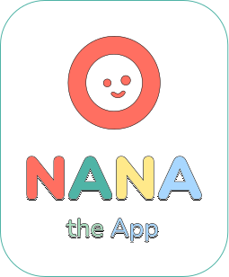

Frontend
Vanilla JavaScript screens with SCSS styling, responsive mobile layouts, child profiles, pain flow screens and a history timeline.

Technical overview
This page explains the technical parts of Nana in a clear, branded way for assessors and testers.
Vanilla JavaScript screens with SCSS styling, responsive mobile layouts, child profiles, pain flow screens and a history timeline.
Three.js loads the GLB body model, lets users rotate and zoom, and maps selected points to readable body zones.
The app records selected areas, pain type, start time, intensity and caregiver notes before saving a summary.
Reports are grouped by Earlier, Today, This Week and All, with search and structured detail cards for review.
The backend exposes REST endpoints for children, pain logs and uploads, with Supabase planned as the deployed data layer.
Core records include children, pain logs and uploaded child images so reports can stay connected to each profile.